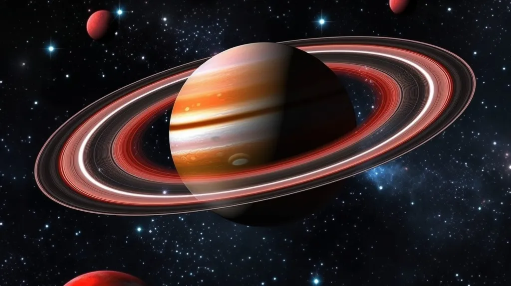

Saturno
<
Saturno, el sexto planeta desde el Sol, es famoso por su impresionante sistema de anillos, que lo convierte en uno de los objetos más emblemáticos del sistema solar. Es el segundo planeta más grande, después de Júpiter, y lleva el nombre del dios romano de la agricultura y el tiempo.
